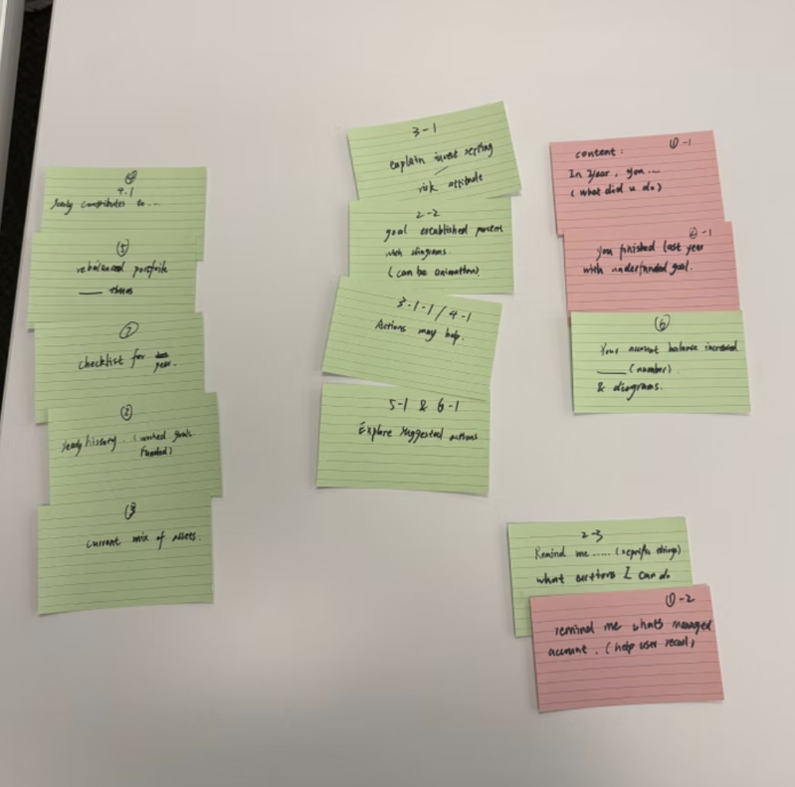
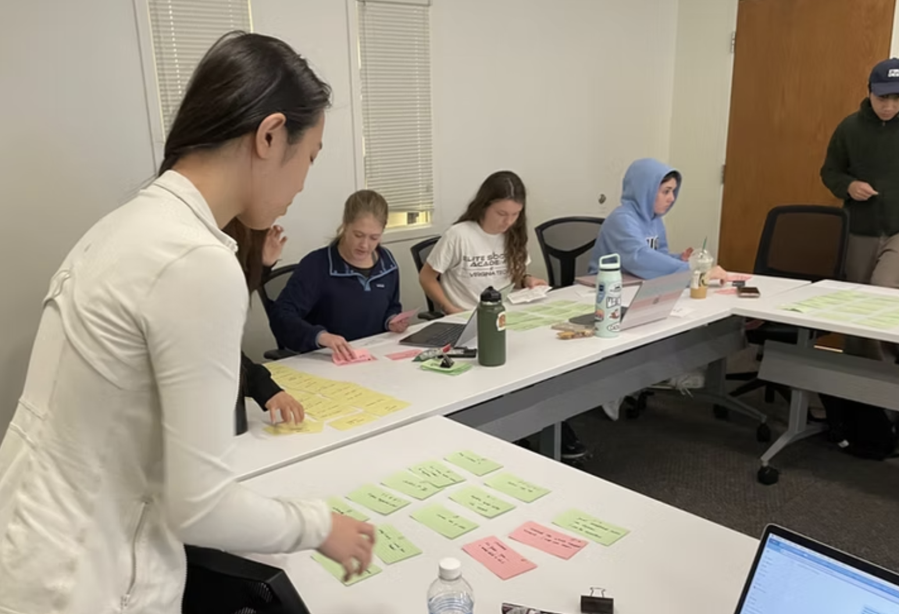
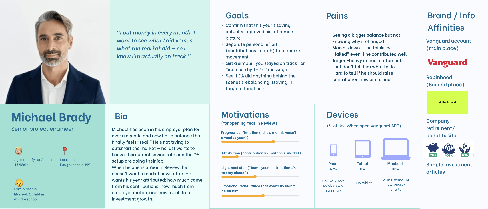
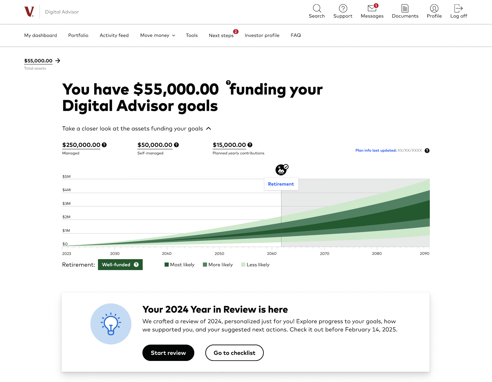
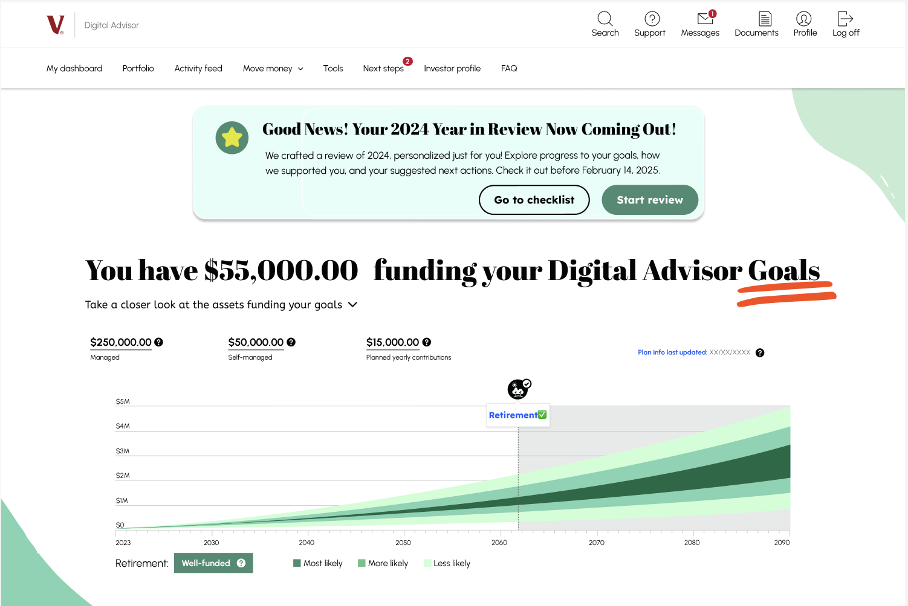
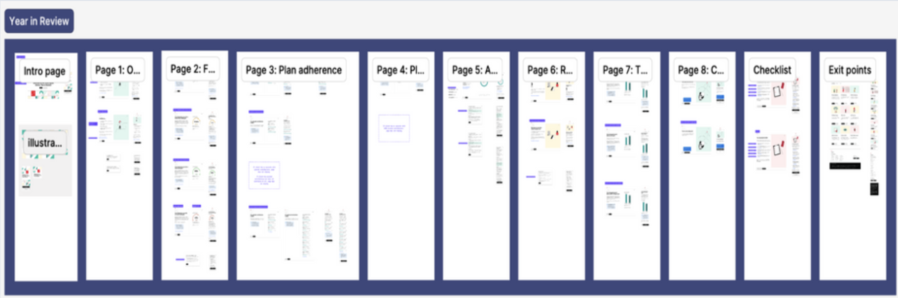
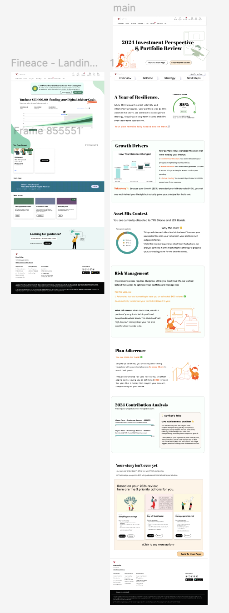

Vanguard 年度回顾界面重设计（50岁以上用户）
Vanguard Year-in-Review Redesign for Adults 50+
将数据报告转化为以安心感为核心的叙事体验
Turning a data report into a reassurance-first narrative experience
退休投资者打开年度回顾只想回答一个问题——而现有设计让这变得不可能
Retirement investors open Year in Review to answer one question — and the existing design makes it impossible
对50岁以上的用户来说，年度回顾不是数据分析面板，而是一次情感上的自我确认时刻：我的持续投入真的有意义吗，还是一切都只是市场波动？现有的 Vanguard 设计对这个问题没有给出清晰的答案。
For adults 50+, Year in Review is not an analytics dashboard. It's a moment of emotional reckoning: did my contributions actually make a difference, or was it all just market movement? The existing Vanguard experience answered neither question clearly.
设计目标
Design Goals
-
1
以安心感为先、叙事驱动的方式重建用户信任与信息清晰度 Build trust and clarity through a reassurance-first, narrative-driven review
-
2
明确归因——将个人投入与市场收益清晰分离 Make attribution explicit — separate personal contributions from market gains
-
3
加入可信的参照基准，帮助用户验证自身表现 Add credible context to validate performance
-
4
将洞察转化为具体可执行的下一步行动 Translate insights into concrete, actionable next steps
两种研究方法，一个核心洞察——这类用户需要先被安慰，再看数据
Two methods, one insight — this audience needs reassurance before data
可用性测试 · N=20
Usability Testing · N=20
卡片分类与行为谱分析
Card Sorting & Behavioral Spectrums
我们通过卡片分类练习，将年度回顾的内容重新归入更符合用户直觉的概念分组。这揭示了原有设计在哪些地方将相关信息割裂开来，造成用户困惑。行为谱分析将参与者按"对金融术语的熟悉程度"和"主动/被动管理偏好"等维度进行标注，帮助我们理解设计需要覆盖的用户心智模型范围。
We conducted card sorting exercises to reorganize Year-in-Review content into natural conceptual groupings. This revealed where the original flow separated related information in ways that confused users. Behavioral spectrum mapping plotted participants across axes like "Comfortable vs. Uncomfortable with Jargon" and "Hands-on vs. Hands-off Management" to understand the range of mental models we were designing for.

卡片分类工作坊——将年度回顾内容重新归入自然分组
Card sorting session — reorganizing Year-in-Review content into natural groupings

行为谱分析——按金融流利度和账户管理维度标注用户分布
Behavioral spectrum mapping — plotting users across financial fluency and account management dimensions
关键发现
Key Findings
为"进度验证者"设计——最关键的情感摩擦点
Designing for the Progress Validator — the most critical friction point
我没有创建泛化的"平均用户"，而是聚焦于"进度验证者"原型——持续储蓄但因市场复杂性而对自身进展缺乏安全感的用户群体。这一细分群体代表了年度回顾体验的情感核心。
Rather than creating a generic "average user," I focused on the Progress Validator archetype — users who are actively saving but feel insecure about their progress due to market complexity. This segment represents the emotional core of the Year-in-Review experience.

主要用户画像——Michael Brady，45岁，高级项目工程师。核心需求：来源归因清晰 + 进度确认。
Primary persona — Michael Brady, Senior Project Engineer, 45. Core need: attribution clarity and progress confirmation.
同理心地图
Empathy Map
同理心地图是设计的转折点。它将设计重心从数据密集的仪表盘转向以安心感为先的界面——直接验证了"情境瀑布图"的必要性：通过可视化方式将个人投入与市场表现分离，即时回答用户最核心的问题。
The empathy map was the turning point for the design. It shifted the focus from a data-heavy dashboard to a reassurance-first interface — directly validating the need for the Contextual Waterfall, which visually separates personal contributions from market performance to answer the user's core question instantly.

同理心地图——"这是我的功劳还是市场的功劳？"成为用户最主导的认知框架
Empathy map — "Was that growth me, or just the market?" surfaces as the user's dominant cognitive frame
同理心地图练习揭示了可用性测试分数无法显示的东西：用户不是被数据搞糊涂了，而是在情感上被数据堵住了。一张显示"+2万美元"的余额图，如果你不知道这是自己挣来的还是市场给的，它带来的不是安心，而是焦虑。这个情感区分驱动了后续每一个设计决策。
The empathy map exercise revealed something the usability test scores couldn't: users weren't confused by the data — they were emotionally blocked by it. A balance chart that shows +$20k feels threatening, not reassuring, if you don't know whether you earned it or the market handed it to you. That emotional distinction drove every subsequent design decision.
三个改变金融数据情感体验的设计决策
Three decisions that changed the emotional experience of financial data
将入口提至首屏——不再让最重要的功能藏在页面底部
Surface the entry point — stop burying the year's most important feature

年度回顾入口藏于页面底部，用户需滚动跳过投资预测图才能找到
Year in Review buried below the fold — users had to scroll past investment projections to find it

页面顶部显著 banner——即时可见，单一明确的行动指引
Prominent banner at top of page — immediate visibility, single clear CTA
- 将年度回顾 banner 和主要行动按钮移至首屏
- 压缩 hero 区域，使目的和下一步操作在一屏内完整呈现
- 简化行动层级：突出一个主要操作，弱化次要操作
- Moved Year-in-Review banner and primary CTA above the fold
- Compressed hero area so purpose + next action fits in one screen
- Simplified CTA hierarchy: one primary action, secondary actions de-emphasized
用户可以立即看到从哪里开始——消除了"我从哪里开始？"的摩擦，这一问题曾导致40%的测试参与者在第一次浏览时完全错过该功能。
Users can immediately see where to start — eliminating the "Where do I begin?" friction that caused 40% of test participants to miss the feature entirely on first view.
将8个独立页面整合为单页叙事滚动——碎片化会摧毁理解
Consolidate 8 pages into one narrative scroll — because fragmentation destroys comprehension

11个需要来回跳转的独立页面——每次点击都丢失上下文
11 pages users had to navigate between — context lost with every click

单页叙事长滚动 + 悬浮导航栏——用户随时知道自己在哪里
Single narrative scroll with sticky navigation bar — users always know where they are
- 将多页向导式结构替换为单页长滚动
- 将内容重组为清晰标注的模块（概览、表现、策略、下一步）
- 加入带区块锚点的悬浮导航，支持快速跳转
- 滚动时高亮显示当前所在区块
- Replaced multi-page wizard with a single long-scroll page
- Restructured content into clearly labeled sections (Overview, Performance, Strategy, Next Steps)
- Added sticky navigation with section anchors for fast jumping
- Made current section visible and highlighted while scrolling
用户流程设计
User Flow Design
在设计单页长滚动布局之前，我从两个层次完整梳理了用户旅程——总体线性流程图展示从入口到行动的叙事顺序，详细流程图则捕捉每个内容模块内部的分支逻辑和决策节点。
Before designing the single-scroll layout, I mapped the complete user journey at two levels of detail — an overall linear flow showing the narrative sequence from entry to action, and a detailed section-by-section flow capturing the branching logic and decision points within each content block.

总体流程——线性叙事顺序：主页 → 年度回顾入口 → 落地页 → 增长驱动 → 资产配置 → 风险 → 计划执行 → 投入分析 → 顾问建议 → 下一步行动
Overall flow — linear narrative sequence: Main page → Year in Review entry → Landing → Growth Drivers → Asset Mix → Risk → Plan Adherence → Contribution Analysis → DA's advice → Next steps

详细流程——9个模块的交互地图，展示每个内容块内部的分支逻辑、决策节点和条件路径
Detailed flow — 9-section interaction map showing branching logic, decision points, and conditional paths within each content block
用户直接告诉我们——翻到第5页时，他们已经忘记第1页建立的上下文。线性滚动保留了叙事连贯性，降低了拼凑碎片化信息的认知成本。
Users told us directly — by the time they reached page 5, they had lost the thread of what page 1 established. The linear scroll preserves narrative continuity and reduces the cognitive cost of piecing together a fragmented story.
情境瀑布图——分清"你做了什么"和"市场做了什么"
The Contextual Waterfall — separating what you did from what the market did

简单的期初/期末对比——即便表现良好，这张图也可能看起来像是在亏损
Simple start vs. end comparison — a chart that can look like a loss even when you're winning

情境瀑布图——个人投入、市场收益、提款金额分别独立显示
Contextual Waterfall — Contributions, Market Gains, and Withdrawals shown as separate drivers
- 将期初/期末柱状图替换为分别展示各驱动因素的瀑布图
- 将提款与市场收益分开显示，使支出不再在视觉上呈现为"亏损"
- 添加平白语言标签和"一句话要点"引导用户解读
- Replaced start-vs-end bar chart with a waterfall chart showing each driver separately
- Separated withdrawals from market gains so spending doesn't visually appear as "loss"
- Added plain-language labels and a Takeaway line to guide interpretation
一个提取了4万美元用于退休生活、同时账户仍在增值的用户，本是一个成功的故事——但原版图表让它看起来像亏损。这是整个项目中情感影响最大的单一设计修复。
A user who withdrew $40k to fund their retirement lifestyle and still grew their portfolio is a success story — but the original chart made it look like a loss. This was the single most emotionally consequential design fix in the project.
这个洞察不是来自设计直觉，而是来自亲眼看着一位68岁的参与者盯着一张显示余额下降的图表，说出"我一定是哪里做错了"——而事实上她成功支撑了两年的退休提款，同时账户依然在增值。数据呈现方式不是视觉细节，而是一种设计的伦理责任。
This insight didn't come from design intuition — it came directly from watching a 68-year-old participant stare at a chart showing her balance went down and say "I must have done something wrong," when in fact she had successfully funded two years of retirement withdrawals while her portfolio still grew. Data framing is not a visual detail. It's an ethical responsibility.
从研究到高保真——以安心感为核心的年度回顾
From Research to High-Fidelity — a reassurance-first Year-in-Review
最终原型覆盖了完整的用户旅程：入口 → 判断结论 → 来源归因 → 参照背景 → 下一步行动。设计系统采用米色背景（减少老年用户的视觉疲劳）、衬线展示字体（建立信任感和权威感），以及 Lexend 字体用于所有数字展示（专为可读性优化的无障碍字体）。
The final prototype covers the complete user journey: entry point → verdict → attribution → context → next steps. The design system uses cream backgrounds (reducing glare for older eyes), serif display fonts (trust and authority), and Lexend for all numerical data (an accessibility-first typeface optimized for legibility).
Prototype walkthrough · 原型演示视频
已于2025年12月向 Vanguard 资深UX设计师展示
Presented to Vanguard Senior UX Designers, Dec 2025
这个项目改变了我对设计的三种认知
Three things this project changed about how I think about design
做这个项目之前，我认为好的UX就是让信息更清晰、更易扫读。经历这次重设计之后，我意识到更大的责任在于帮助人们理解他们所看到的东西。在金融领域，用户不只是在阅读数字——他们在试图理解自己的选择、自己的进展，以及自己应该感到担忧还是放心。设计可以让他们安心，也可能在无意中制造疑虑。
Before this project, I often thought strong UX meant making information cleaner and easier to scan. After working through this redesign, I realized the bigger responsibility is helping people make sense of what they see. In finance, users are not just reading numbers. They are trying to understand their own choices, their progress, and whether they should feel worried or reassured. The design can either steady them or unintentionally create doubt.
为50岁以上的投资者设计也提醒我，用户并不存在一个"平均"的专业水平。有些人想要一个简洁、可信的快速摘要；另一些人想要更深入的细节，但只在他们主动选择的时候。这促使我更专注于流程和结构。我希望这个体验像一个有清晰引导的故事，而不是一组需要用户自己拼凑起来的独立页面。
Designing for 50+ investors also reminded me that users do not come in one "average" level of expertise. Some want a quick summary that feels calm and trustworthy. Others want deeper details, but only when they choose to go there. That pushed me to focus on flow and structure. I wanted the experience to feel like a guided story with clear orientation, not a set of disconnected pages that users have to piece together on their own.
有一个时刻让我印象深刻：我意识到一张图表多么容易传递错误的信息。一个简单的期初/期末对比，在涉及提款的情况下可能看起来像亏损，即便用户实际上成功支撑了自己的生活，同时账户仍在增值。这个洞察让我在数据呈现上更加谨慎。我现在将数据可视化视为情感体验的一部分，而不仅仅是分析工具。
One moment that stayed with me was realizing how easily a chart can send the wrong message. A simple start versus end comparison can look like a loss when withdrawals are involved, even if the user successfully funded their life and still grew their portfolio. That insight made me more careful about data framing. I now see data visualization as part of the emotional experience, not just the analytical one.
Gratitude
I am deeply thankful to Professor Ruel, everyone in MEJO 581, and our participants for the support and honest feedback throughout this process. The critique kept me grounded in user behavior and decision-making, not just visual polish. I am also grateful to Vanguard for the inspiration and the opportunity to work on the Year in Review project.